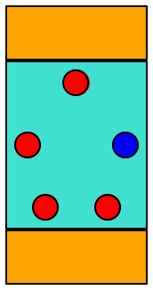
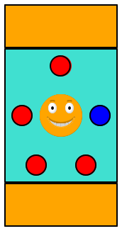

The Bazaar Game
The game is inspired by Bazaar; the actual game may help develop some intuition but the physical game and the implementation differ in many ways.
Most of the time when we discuss ideas, the words “referee”, “player”, and so on refer to software components not people. To remind you of their inanimate nature, it is best to use “its” or “it”—
as in “its game pieces” or “it’s taking its turn.”.
Informal Overview
The Bazaar game is a trading game for 2 to 6 players. The playing field is made up of two items:
cards that players must purchase to get points, and
equations that allow players to trade what they own for alternatives.
Players own “pebbles,” a form of currency and keep them hidden from other players. With these pebbles they can acquire the displayed cards; each purchase yields a number of points depending on what the card displays and on how many pebbles the player has left. Once a card is purchased, it is replaced with another one. Players can also exchange (some of) their pebbles with a bank according to the displayed equations.
The player with the highest total score wins when the game is over.
Game Pieces
Our version of the game comes with pebbles of the following colors: red, white, blue, green, yellow. |
|
There are 100 pebbles overall, an equal number of each kind. |
|
A card displays five images of such pebbles, arranged in a circular manner, optionally decorated with a happy face in the center. |   |
There are 20 cards overall. |
|
An equation shows two collections of pebbles on the sides of an = sign; each side has at least one and at most 4 pebbles. The two sides must not contain pebbles of the same color. | |
There are 10 equations overall. |
|
Setting up the Game
The referee picks 10 equations at random and makes them available to the players. It also puts four cards on the playing field, again visible to all players. Finally, it endows its bank with all of the colored pebbles. That’s it.
Playing a Turn
A player’s turn can proceed in one of three ways:
A player can draw a random pebble from the bank of remaining pebbles. (The physical game comes with a 5-sided die for this purpose that shows the 5 colors; our digital players will ask the referee to draw randomly instead.) Subsequently, the player may purchase cards from the visible cards by exchanging a matching bunch of pebbles with the bank.
A player may exchange pebbles with the bank, using any of the applicable 10 equations as exchange rates. (Equations may be used in either direction; that’s what “equation” means.) If the bank does not own enough pebbles for a particular equation, the corresponding trade cannot take place. Once exchanges are complete, the player can again purchase cards as above.
Finally, a player may choose to skip obtaining a random pebble or applying any exchange equations, and instead purchase a card or even several.
Any legal exchange request comes with a price. Per such request, the referee removes the bottom-most card from the pile of invisible ones or, if this pile is empty, it removes all visible cards, thus ending the game.
After a player’s turn is over, the referee replaces the acquired cards, if any, with fresh ones, if any are remaining, and grants the next player a turn.
The referee eliminates any player that violates any rules during a turn. Elimination means that the player’s pebbles disappear from the game.
Scoring a Turn A player receives points after buying a card.
pebbles left |
| points per plain card |
| ... card with face |
3 or more |
| 1 |
| 2 |
2 |
| 2 |
| 3 |
1 |
| 3 |
| 5 |
0 |
| 5 |
| 8 |
The referee keeps track of the scores on a per turn basis. The scores of all players are visible.
Ending a Game
all players have been kicked at the end of a player’s turn;
a player has 20 points at the end of its turn;
no more cards are available for purchase; or
the bank is empty and no player can buy a card.